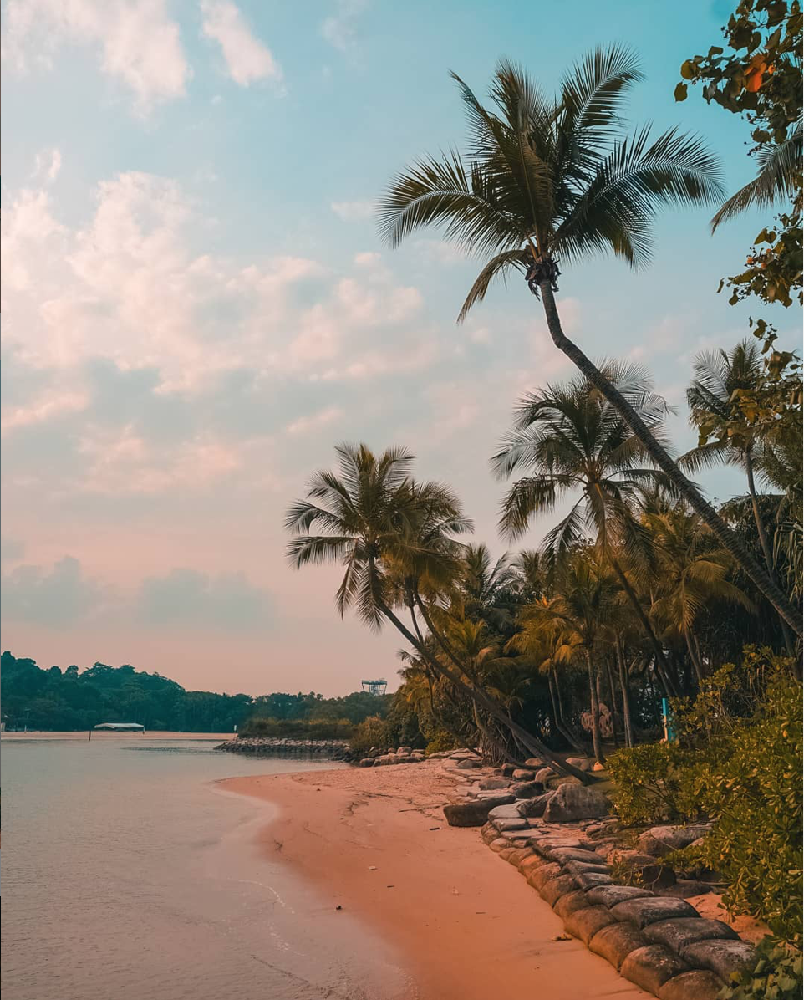
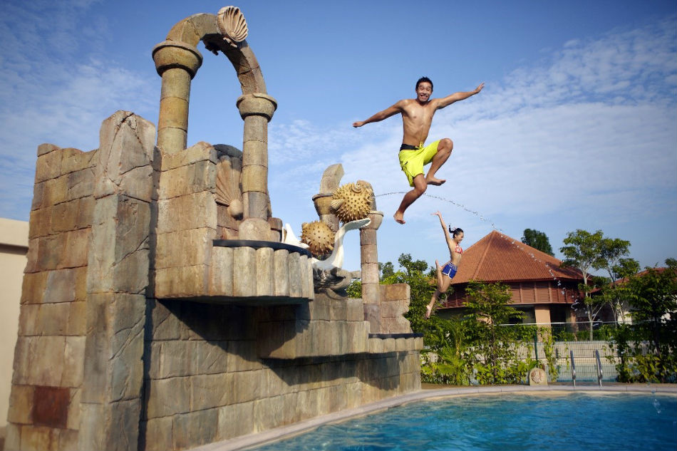
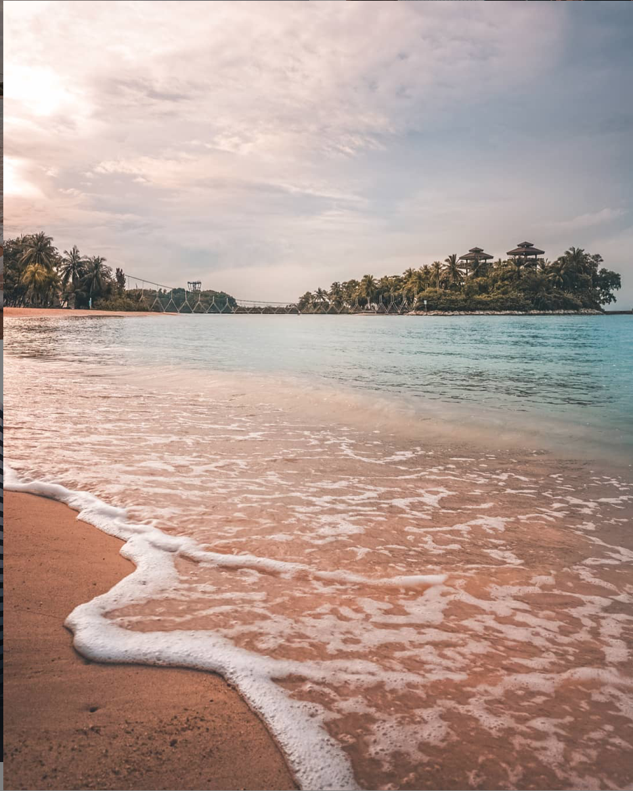
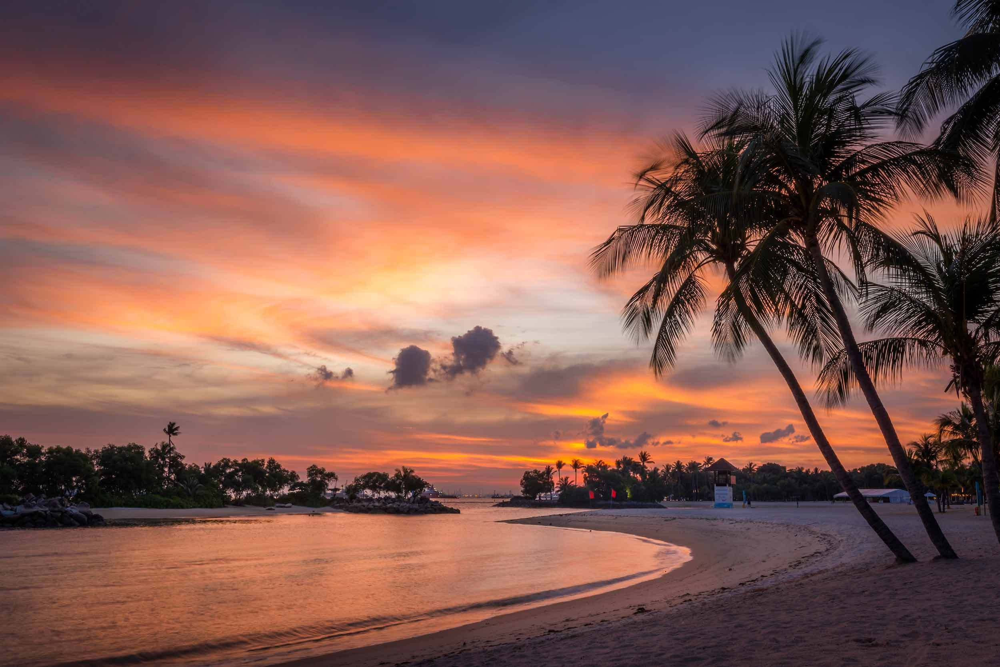

Located right outside Harbour Front, off Singapore's southern coast, Sentosa is an island resort. Both locals and tourists visit Sentosa for a funfilled day (or two). This sunny island is home to many thrilling attractions, exquisite beachers, and other exciting events. I love Sentosa for its variety of acitvities it has to offer, for all ages. It has the perfect balance of being just far away from the mainland enough for one to enjoy a escape from the hectic city while still being accesible and relatively affordable.
How Do I Get There:
Alight at the Harbour Front MRT station and enter Vivo City Mall.
Go to the third floor and grab a pass to board the Sentosa express train!
Alternatively, you can drive there!
Opening Hours:
9am to 10pm daily
Dolphin Island
The Dolphin Island is a great place to bond with your loved ones, while playing with one of the most magnificent mammals on the planet!
With prices ranging from as cheap as $20, The Dolphin Island is an ideal spot to head over for a staycation in Singapore to experience something similar to swimming with the Dolphins in Bahamas.
Psst, you might even get to dive underwater and watch these beautiful creatures from the point-of-view of a fish.
iFly Singapore
Ever wanted to go on a skydiving adventure but never wanted to break the bank? Do you want to fly around but don't dare to jump of a helicopter? Look no further because iFly Singapore is just the place for you! iFly singapore is the largest themed windtunnel in the world, allowing participants to experience the thrill of indoor skydiving without any of the dangers that comes along with it. Costing only one-fifth the price of an actual skydive, I would reccomend this to any daredevils seeking for a thrilling experience in this tiny land, that is Singapore.
Adventure Cove
I'm not saying Adventure cove (AC) is better than Universal Studios Singapore (USS). But if I was given a chance to go visit either for FREE, I would still choose Adventure Cove. Despite being at half the price point of a USS ticket, this waterpark seems to offer more adventure,as the name suggests, than the over-rated (at least in my own honest opinion) USS. Aside from the typical waterslides and a lazy pool, you get to swim among the fishes in the snorkelling pool. Who ever said we had to travel out of Singapore to snorkel! Infact, I personally find that getting to snorkel alone has made the $30+ entry fee more than worth it. Bored of swimming in the water all day? Have no fear because AC got your back! Visit Splashworks, where you get to jump off a mini cliff and climb up a wall to ring a bell amongst many other exciting activites. With many innovative attractions, on top of the usual water rides, I would say Adventure Cove is a must to visit!
Tanjong Beach
Amongst the three beaches in Sentosa, Palawan Beach is hands down my favourite beach. It is the closest you will get to a beach staycation and a short getaway from the bustling citylife. Located slightly further down the better-known and over-populated Siloso Beach, Palawan Beach has more than just serenity to offer. Enjoy the beautiful view as your toes get covered by the softest sand you will find in Sentosa, or emerse yourself in the water as the soft waves drown out any of your worrying thoughts. The soft sand in Palawan Beach also makes it a prime spot to play any beach ball games. After a long relaxing day, lay out a picnic mat, grab your snacks and watch as the Sun kisses the horizon goodbye. Palawan Beach is certainly one of the best spot in Sentosa to enjoy the sunset.
